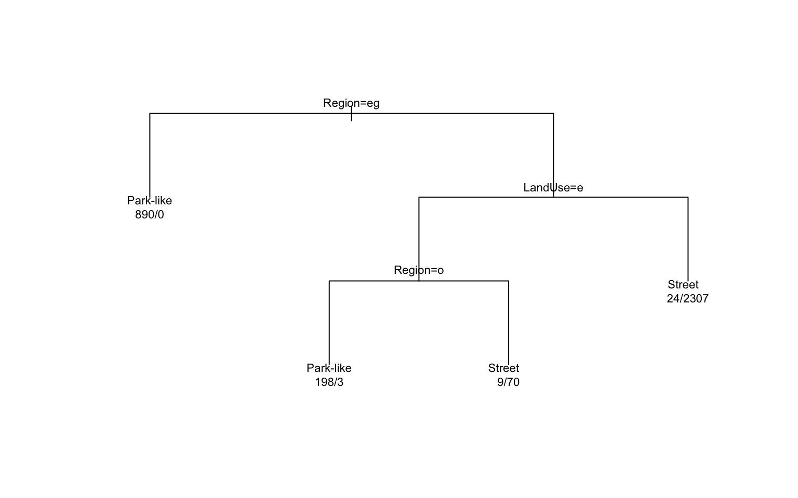
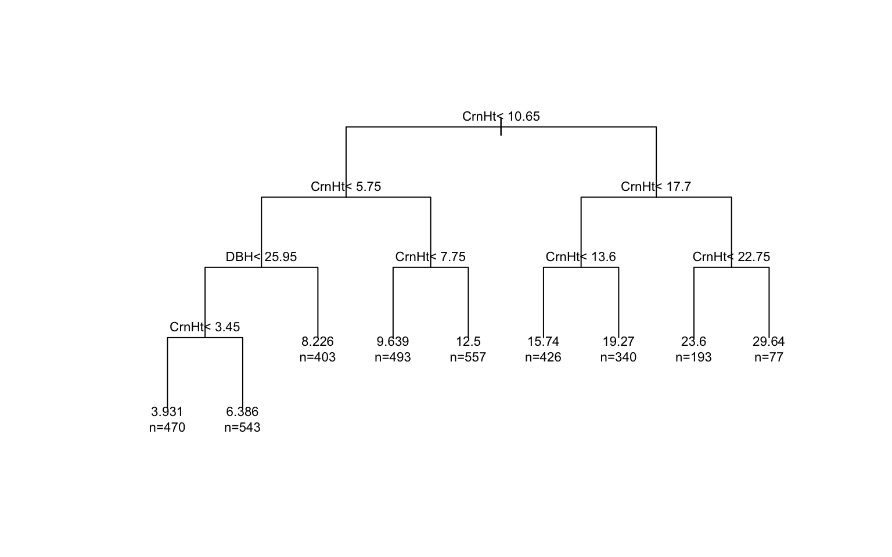

This report uses the USDA Forest Service Research Data Archive
publication Urban tree database and, specifically, the
local file Data/TS3_Raw_tree_data.csv included in this
folder. The archive describes the publication as a multi-city urban tree
dataset covering more than 14,000 measured street and park trees across
17 cities in the United States. Source page: https://www.fs.usda.gov/rds/archive/catalog/RDS-2016-0005.
This dataset mixes ecology, urban form, and management questions in one table. Tree methods work especially well here because they can combine species categories, regional labels, and structural measurements without forcing everything into a single linear relationship.
In this notebook I use tree methods to answer four practical questions:
kable(overview, caption = "Summary of the USDA urban tree dataset used in this report.")| Measure | Value |
|---|---|
| Total tree records | 14487 |
| Distinct cities | 17 |
| Distinct climate regions | 17 |
| Street trees | 8987 |
| Non-street trees grouped as park-like | 5500 |
| Distinct tree types | 12 |
The original Park/Street field has a few small
categories such as nursery and regional big tree. To make the result
easier to explain, I collapse the outcome into two classes:
StreetPark-likeThis lets the tree model act like a site classifier: based on size, canopy form, and land-use context, what kind of planting environment does a tree look like it belongs to?
site_tree <- rpart(Site.Type ~ ., data = train_site, method = "class")
plot(site_tree, uniform = TRUE, margin = 0.08)
text(site_tree, use.n = TRUE, cex = 0.7)
site_pred <- predict(site_tree, test_site, type = "class")
site_metrics <- classification_metrics(test_site$Site.Type, site_pred)
site_importance <- top_importance(site_tree)
kable(site_metrics, caption = "Classification performance for predicting site type.")| Accuracy | Kappa |
|---|---|
| 0.991 | 0.98 |
kable(site_importance, caption = "Most influential variables in the site-type tree.")| Variable | Importance |
|---|---|
| Region | 1189.07 |
| LandUse | 651.11 |
| Setback | 33.78 |
| Leaf | 32.22 |
| WireConf | 28.33 |
| TreeType | 25.06 |
This is a useful planning interpretation of the dataset. The strongest variables are region, land use, and setback, which suggests that site context matters at least as much as raw tree dimensions when distinguishing street trees from trees in park-like settings.
Urban tree height is shaped by both biology and management. A regression tree is useful here because it can split on crown height, diameter, and leaf area in a way that feels close to how an arborist might reason through the problem.
height_tree <- rpart(TreeHt ~ ., data = train_height, method = "anova")
plot(height_tree, uniform = TRUE, margin = 0.08)
text(height_tree, use.n = TRUE, cex = 0.7)
height_pred <- predict(height_tree, test_height)
height_metrics <- regression_metrics(test_height$TreeHt, height_pred)
height_importance <- top_importance(height_tree)
kable(height_metrics, caption = "Regression performance for predicting tree height in meters.")| RMSE | MAE |
|---|---|
| 2.14 | 1.49 |
kable(height_importance, caption = "Most influential variables in the tree-height model.")| Variable | Importance |
|---|---|
| CrnHt | 126913.42 |
| Leaf | 64991.84 |
| AvgCdia | 52336.50 |
| DBH | 47711.57 |
| Age | 30539.91 |
| TreeType | 6177.12 |
The importance scores usually put crown height, leaf area, average crown diameter, and DBH near the top. That makes the model easy to justify: urban tree height is strongly tied to overall crown architecture, not just one diameter measurement.
Shade is one of the clearest urban ecosystem services in this
dataset. To make that idea more concrete, I create a binary target
called Big.Shade, where trees with higher
CarShade values are labeled High shade.
The rule model asks a planning-style question: which combinations of region and tree structure tend to produce stronger shade benefits?
shade_rules <- C5.0(Big.Shade ~ ., data = train_shade, rules = TRUE)
shade_pred <- predict(shade_rules, test_shade)
shade_metrics <- classification_metrics(test_shade$Big.Shade, shade_pred)
shade_usage <- as.data.frame(C5imp(shade_rules, metric = "usage")) %>%
rownames_to_column(var = "Variable") %>%
rename(Usage = Overall) %>%
arrange(desc(Usage)) %>%
mutate(Usage = round(Usage, 2))
kable(shade_metrics, caption = "Rule-based performance for predicting high car shade.")| Accuracy | Kappa |
|---|---|
| 0.932 | 0.689 |
kable(head(shade_usage, 6), caption = "Most-used predictors in the shade rules.")| Variable | Usage |
|---|---|
| Region | 100 |
| Park.Street | 0 |
| TreeType | 0 |
| DBH | 0 |
| TreeHt | 0 |
| AvgCdia | 0 |
summary(shade_rules)##
## Call:
## C5.0.formula(formula = Big.Shade ~ ., data = train_shade, rules = TRUE)
##
##
## C5.0 [Release 2.07 GPL Edition] Wed Apr 1 21:36:48 2026
## -------------------------------
##
## Class specified by attribute `outcome'
##
## Read 3501 cases (8 attributes) from undefined.data
##
## Rules:
##
## Rule 1: (408/87, lift 5.8)
## Region in {NMtnPr, Piedmt}
## -> class High shade [0.785]
##
## Rule 2: (3093/154, lift 1.1)
## Region in {CenFla, GulfCo, InlEmp, InlVal, InterW, LoMidW, MidWst,
## NoCalC, NoEast, PacfNW, SacVal, SoCalC, SWDsrt, TpIntW,
## Tropic}
## -> class Low shade [0.950]
##
## Default class: Low shade
##
##
## Evaluation on training data (3501 cases):
##
## Rules
## ----------------
## No Errors
##
## 2 241( 6.9%) <<
##
##
## (a) (b) <-classified as
## ---- ----
## 321 154 (a): class High shade
## 87 2939 (b): class Low shade
##
##
## Attribute usage:
##
## 100.00% Region
##
##
## Time: 0.0 secsThis section is intentionally more interpretive than predictive. Even when the rules are short, they help translate the dataset into a management idea: some regional and structural profiles are much more likely to correspond to trees that deliver stronger shade.
A single classification tree is easy to explain, but it can change if the sample shifts. Bagging gives us a way to ask whether the street-versus-park-like pattern is robust or whether it depends too heavily on one tree.
bag_model <- bagging(Site.Type ~ ., data = train_site, nbagg = 25)
bag_pred <- predict(bag_model, test_site)
if (is.list(bag_pred) && "class" %in% names(bag_pred)) {
bag_pred <- bag_pred$class
}
bag_pred <- factor(bag_pred, levels = levels(test_site$Site.Type))
bag_metrics <- classification_metrics(test_site$Site.Type, bag_pred) %>%
mutate(Model = "Bagged trees")
single_tree_metrics <- site_metrics %>%
mutate(Model = "Single tree")
comparison <- bind_rows(single_tree_metrics, bag_metrics) %>%
select(Model, Accuracy, Kappa)
kable(comparison, caption = "Comparing a single site-type tree with a bagged ensemble.")| Model | Accuracy | Kappa |
|---|---|---|
| Single tree | 0.991 | 0.980 |
| Bagged trees | 0.997 | 0.992 |
If the bagged model improves only a little, that is still informative. It means the site signal in this USDA dataset is already strong enough that a single tree captures much of the story, while the ensemble mostly adds stability.
This USDA urban tree dataset is especially well suited to tree-based methods because it combines species, structure, region, and land-use information in one place.
The models here suggest four useful takeaways:
That makes this archive a strong example of how tree methods can support both ecological interpretation and urban forestry planning.